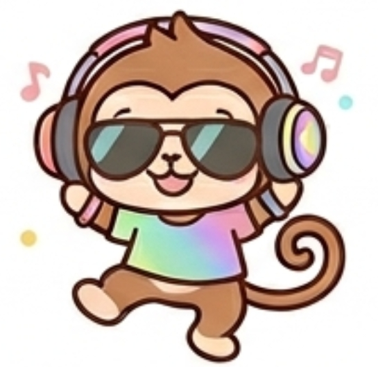

あなたのフレンドタイプは...

BFAH：ファンキーモンキー
あなたは、抜群の親しみやすさと圧倒的なフットワークの軽さをあわせ持つ、グループの「最高の相棒」です。自分からおかしなボケを連発して笑いの中心を奪いにいくようなタイプではなく、むしろ「自分が前に出すぎて空気を悪くしたらどうしよう」と人一倍気にする繊細さを持っています。
だからこそ、自分の話を押し通すのではなく、他人の「楽しそうな提案」や「その場のノリ」を誰よりも熱心に聞いて、笑顔で受け止めることができます。寂しがり屋で人が大好きなため、みんなの話に全力で乗っかりながら、場が冷めたり誰かが浮いたりしないようにそっと全体の温度感をキープできる、非常に優しく柔軟なタイプです。
友達から見たあなたは、ズバリ「どんな急な誘いでも駆けつけて、場の空気を120%ハッピーに戻してくれる最高の安心感」です。
当日の夜に「今から集まれる？」と急に声をかけられたとき、二つ返事で「いくいく！」とやってきてくれるのがあなたです。友達の間では「モンキーを誘って断られた記憶がないｗ」「迷ったらとりあえずモンキーに声かけとけば間違いない」と、遊びの計画を立てる際のハードルが最も低い、最強のインフラとして認識されています。
あなたがその場に加わるだけで、退屈だった空間やどこかギスギスしていた空気が、一気にいつもの楽しい日常へと引き戻されます。あなたが誰かのいじりに全力で良いリアクションを返したり、個性の強いボケメンバーの話を「それ最高じゃん！」とニコニコ聞いて盛り上げたりする姿を見て、周りは内心「こいつがいると、どんなに小さな集まりでもめちゃくちゃ安心するな」と、あなたの存在に深く感謝しています。
自分が笑いの中心になって目立つことは少なく eが、あなたが誰の話も無視せずに拾い上げるその優しさに、全員が全力で甘え、頼り切っています。
急な計画や誰も来ないような時間帯の集まりでも、あなたが変わらないノリで駆けつけることで、遊びの成立確率が跳ね上がります。
誰かの思いつきやボケを絶対にシラけさせず、120%のテンションで受け止めて場を回すため、あなたの周りには常に笑いと活気が絶えません。
トゲやプライドがなく、常にフラットで親しみやすいオーラを放っているため、グループ内の誰にとっても「一番気楽に話しかけられる存在」になっています。
あなたの「話をしっかり聞いて、ノリを合わせる力」は最大の武器ですが、空気が悪くなることを恐れるあまり、何でも「いいよ！」と受け流していると、時に「自分の意思がなく、ただ流されているだけの都合のいい人」として扱われてしまう原因になります。声の大きいメンバーから「モンキーはどこに連れて行っても文句言わないから、こっちの意見だけで決めちゃおう」と、雑に扱われてしまうケースがあります。
周りがあなたを誘うのは、あなたのことが好きだからです。しかし、あまりにも自分の意見や好みを隠しすぎていると、「モンキーって、本当は何をしてる時が一番楽しいんだろう？」「本当に心から楽しんでくれてるのかな」と、友達がどこか物足りなさや寂しさを感じてしまうことがあります。
たまには周りの話を拾うのを一瞬やめて、「今日はここに行きたい！」「これが食べたい！」と自分主導の欲求を発信してみてください。あなたのその「本音の欲求」を見たとき、友達は「あのモンキーがやりたいことなら、全力で付き合うぜ！」と大喜びし、より対等で深い信頼関係が築けるようになります。